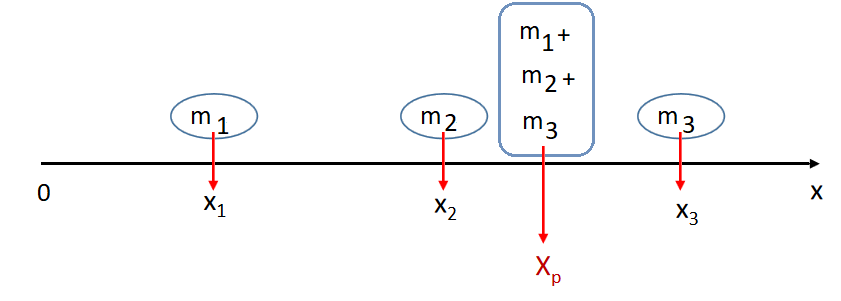
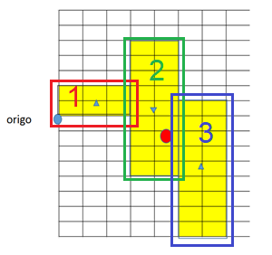
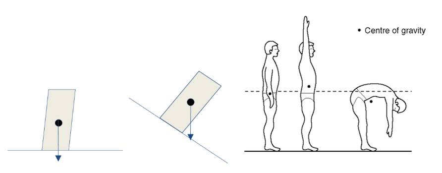
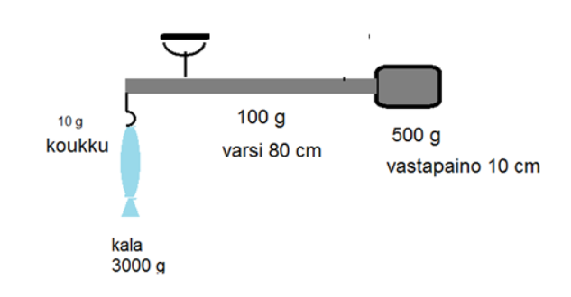

Painopiste
Painopiste¶
Jatkossa tarkastellaan systeemejä, jotka koostuvat useasta eri massaisesta osasta. Esimerkiksi traktoria tai trukkia voidaan mallintaa karkeasti siten, että taka-akselin kohdalla on yksi pistemäinen osa, etuakselin kohdalla toinen ja kauhan tai nostolavan kohdalla kolmas. Tällaisille systeemeille on tarpeellista osata laskea painopiste. Sen avulla nimittäin voidaan päätellä, milloin laite kellahtaa kumoon. Myös erilaisiin tukirakenteisiin kohdistuvia voimia laskettaessa tarvitaan tietoa siitä, mihin systeemien osien painovoimat sijoittuvat.

Painopiste \(x_p\) on sellainen piste, että jos koko kappaleen paino olisi sijoittunut siihen, niin kappaleen painolla olisi sama momentti kuin jos kappaleen osien painovoimien momentit laskettaisiin erikseen. Kuvan kappale koostuu kolmesta osasta, joiden massat ovat \(m_1, m_2, m_3\) ja sijainnit \(x_1, x_2, x_3\). Kuvassa momentti on laskettu koordinaatiston origon suhteen. Kirjoitetaan määritelmän mukaan:
\(x_p (m_1g+m_2g+m_3g) = m_1 g x_1 +m_2 g x_2 + m_3 g x_3\)
Muokataan yhtälöä ja ratkaistaan painopiste:
\(x_p g(m_1+m_2+m_3) = m_1 g x_1 +m_2 g x_2 +m_3 g x_3\)
\(x_p (m_1+m_2+m_3) = m_1 x_1 + m_2 x_2 + m_3 x_3\)
\(x_p=\frac{m_1 x_1 + m_2 x_2 + m_3 x_3}{m_1 + m_2 + m_3}\)
Laskukaava voidaan yleistää myös \(n\) osasta koostuvalle kappaleelle. Näin saadaan yksiulotteisen kappaleen painopisteen \(x_p\)laskukaava ja vastaavasti kaksiulotteiselle kappaleelle painopiste \(y_p\) myös toisessa suunnassa:
\(x_p=\frac{m_1 x_1 + m_2 x_2 + \ldots m_n x_n}{m_1 + m_2 + \ldots m_n}\), \(y_p=\frac{m_1 y_1 + m_2 y_2 + \ldots m_n y_n}{m_1 + m_2 + \ldots m_n}\).
Esim. Laske keltaisella värjätyn tasapaksun levyn painopisteen koordinaatit.

Ratkaisu
Oletetaan, että aineen tiheys on \(\rho\). Tällöin jokaisen palan massa on \(\rho A d\), missä \(A\) on levyn pinta-ala ja \(d\) levyn paksuus. Pinta-alat saadaan palan leveyden ja korkeuden tulona. Yksittäisten palojen painopisteet ovat palojen keskipisteet.
palan massa on \(\rho\cdot 3\cdot 2 \cdot d = 6\rho d\) ja painopiste \((1.5, 1)\).
palan massa \(\rho\cdot 2\cdot 9 \cdot d = 18\rho d\) ja painopiste \((4, 0.5)\).
palan massa \(\rho\cdot 2\cdot 9 \cdot d = 18\rho d\) ja painopiste \((6, -3.5)\).
Painopisteen \(x\)-koordinaatti on
\(x_p=\frac{6\rho d\cdot 1.5+18 \rho d \cdot 4+18 \rho d \cdot 6}{6\rho d+18 \rho d+18 \rho d}=\frac{6\cdot 1.5+18 \cdot 4+18\cdot 6}{6+18 +18}=4.5\)
ja \(y\)-koordinaatti on
\(y_p=\frac{6\rho d\cdot 1+18 \rho d \cdot 0-18 \rho d \cdot 3.5}{6\rho d+18 \rho d+18 \rho d}=\frac{6\cdot 1+18 \cdot 0-18\cdot 3.5}{6+18 +18}=-1.1\).
Käytännönläheisemmin painopiste on massan keskimääräinen sijainti, tai osamassojen keskipisteiden painotettu keskiarvo. Painopiste voi olla myös kappaleen ulkopuolella, esimerkiksi autonrenkaan painopiste on renkaan keskellä. Symmetrisessä, kaikkialta samanlaisesta aineesta koostuvasta kappaleessa (esim. tasapaksu lankku) painopiste on kappaleen keskellä.
Kappale pysyy tasapainossa, jos sitä tuetaan painopisteen kohdalta. Kappale kaatuu, jos sen painopisteestä kohtisuoraan alaspäin osoittava painovoimavektori osuu tukipinnan ulkopuolelle, kuten kuvan esimerkeissä. Tukipinnalla tarkoitetaan esimerkiksi tuolin tai ihmisen jalkojen rajaamaa aluetta. Ripustettaessa painopiste asettuu suoraan ripustuspisteen alapuolelle.

Esim. Kuvassa on kalavaaka, jossa on liikutettava koukku, varsi ja vastapaino. Kahvan kohdalta varresta luetaan punnittavan kalan paino. Millä etäisyydellä koukusta kahva on, kun kala painaa 3000 g?

Ratkaisu
Painopiste on suoraan ripustuskohdan alapuolella, eli kahva on systeemin painopisteen kohdalla. Lasketaan painopiste vaakasuunnassa siten, että momenttiakselipiste on koukun kiinnityskohdalla. Massat voi sijoittaa kaavaan grammoina ja mitat senttimetreinä. Massojen yksiköt supistuvat joka tapauksessa pois.
\(x_p=\frac{10~\text{g}\cdot 0~\text{cm} + 3000~\text{g}\cdot 0~\text{cm} +100~\text{g} \cdot 40~\text{cm} + 500~\text{g} \cdot 85~\text{cm}}{10~\text{g} + 3000~\text{g} + 100~\text{g} + 500~\text{g}}=12.9~\text{cm}\)